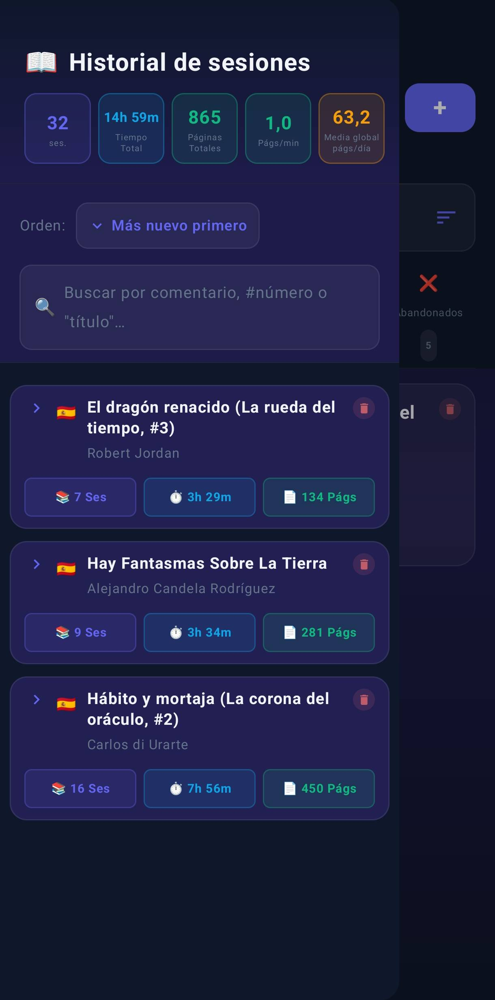
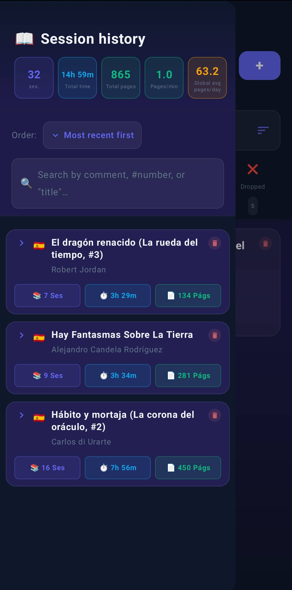

📱 Así se ve Lecturameter
Capturas reales de la aplicación

📚 Biblioteca Organiza tus libros por estanterías

📖 Detalle del libro Sesiones, estadísticas y cronómetro

📋 Historial global Resumen por libro con sesiones, tiempo y páginas

📊 Estadísticas anuales Páginas leídas mes a mes

📊 Mapa de calor mensual Intensidad de lectura día a día

🧩 Widget Tu libro en la pantalla de inicio
✨ Características
⏱️
Cronómetro
Funciona con la pantalla apagada.
📊
Estadísticas
Gráficos, Wrapped anual, heatmap.
🧩
Widget
Tu libro en la pantalla de inicio.
📖
Páginas funcionales
Ignora prólogos, índices, apéndices.
🌐
Múltiples ediciones
Idiomas distintos sin perder sesiones.
☁️
Backup Local y en Drive
Copias automáticas en local y Google Drive.
📦 Copia de Seguridad de demostración
¿Quieres probar la app con datos de ejemplo? Descarga este backup con 10 libros clásicos repartidos en todas las categorías (leyendo, terminado, releyendo, quiero leer, abandonado) y sesiones de lectura incluidas.
⬇ Descargar backup demo
Cómo usarlo:
1. Descarga el archivo JSON en tu móvil
2. Abre Lecturameter → Ajustes → Restaurar backup local
3. Selecciona el archivo descargado
4. ¡Listo! Explora la biblioteca, estadísticas y widget
1. Descarga el archivo JSON en tu móvil
2. Abre Lecturameter → Ajustes → Restaurar backup local
3. Selecciona el archivo descargado
4. ¡Listo! Explora la biblioteca, estadísticas y widget
📱 Lecturameter in action
Real screenshots of the app

📚 Library Organize your books by shelves

📖 Book detail Sessions, stats and timer

📋 Global history Summary by book with sessions, time and pages

📊 Annual stats Pages read month by month

📊 Monthly heatmap Reading intensity day by day

🧩 Widget Your book on the home screen
✨ Features
⏱️
Timer
Works with the screen off.
📊
Stats
Charts, Wrapped, heatmap.
🧩
Widget
Your book on the home screen.
📖
Functional pages
Ignore prologues, indexes, appendices.
🌐
Multiple editions
Different languages without losing sessions.
☁️
Local and drive backup
Automatic backups locally and on Google Drive.
📦 Demo backup
Want to try the app with sample data? Download this backup with 10 classic books across all categories (reading, finished, rereading, want to read, dropped) with reading sessions included.
⬇ Download demo backup
How to use it:
1. Download the JSON file to your phone
2. Open Lecturameter → Settings → Restore local backup
3. Select the downloaded file
4. Done! Explore the library, stats and widget
1. Download the JSON file to your phone
2. Open Lecturameter → Settings → Restore local backup
3. Select the downloaded file
4. Done! Explore the library, stats and widget